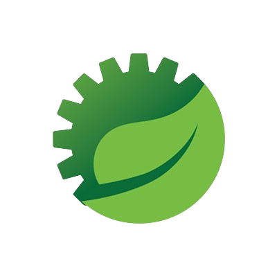
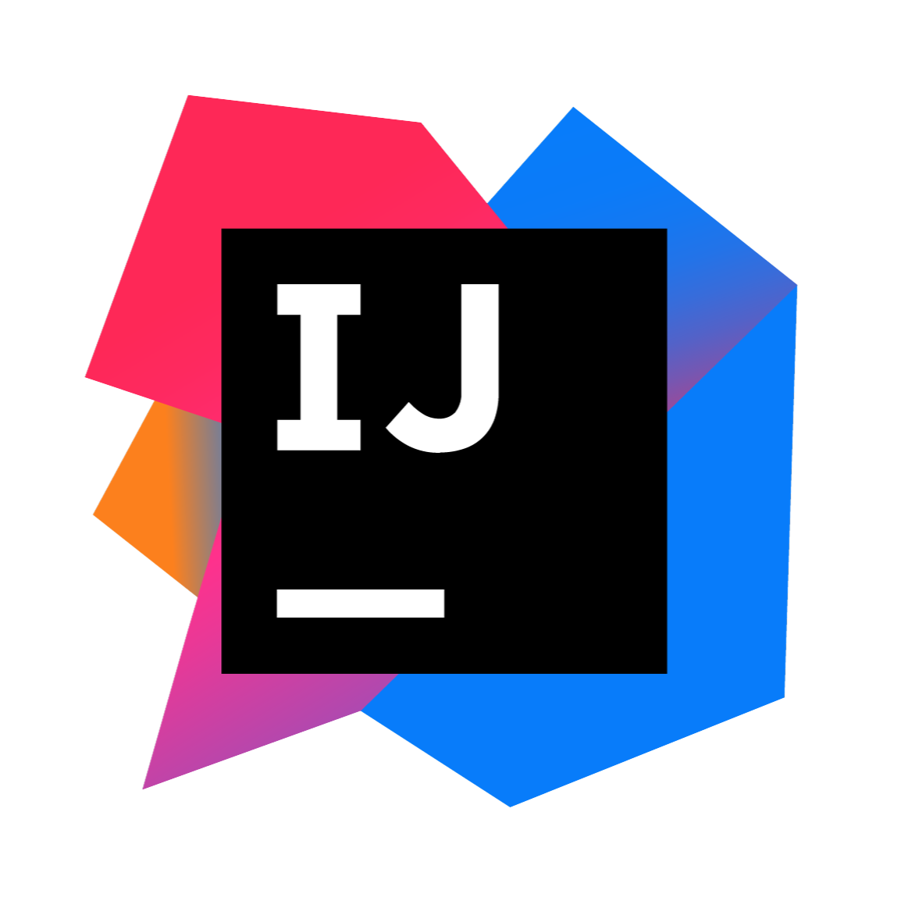
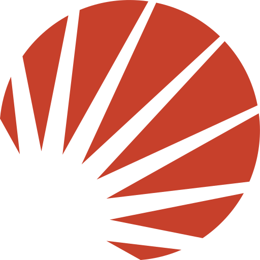
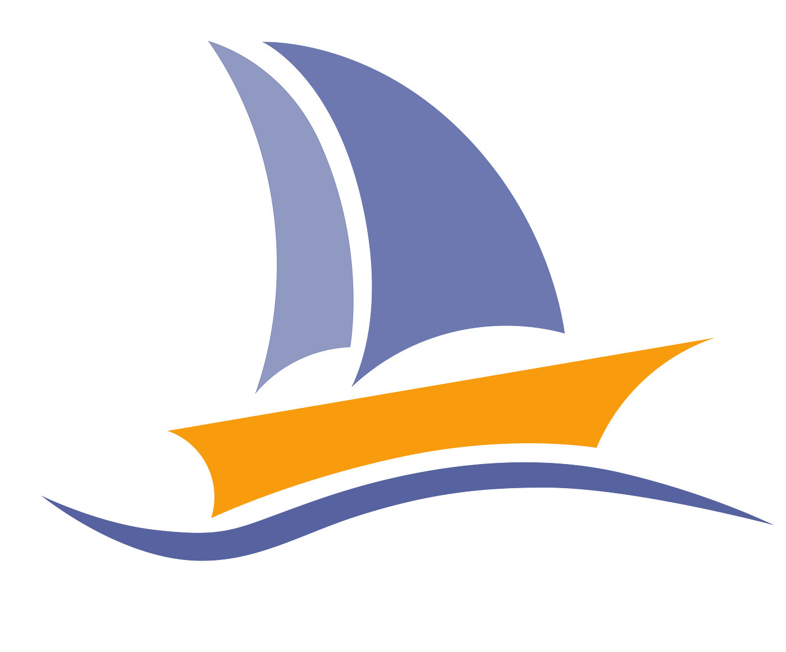
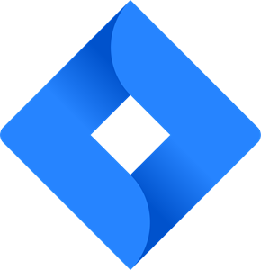
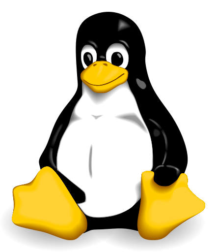
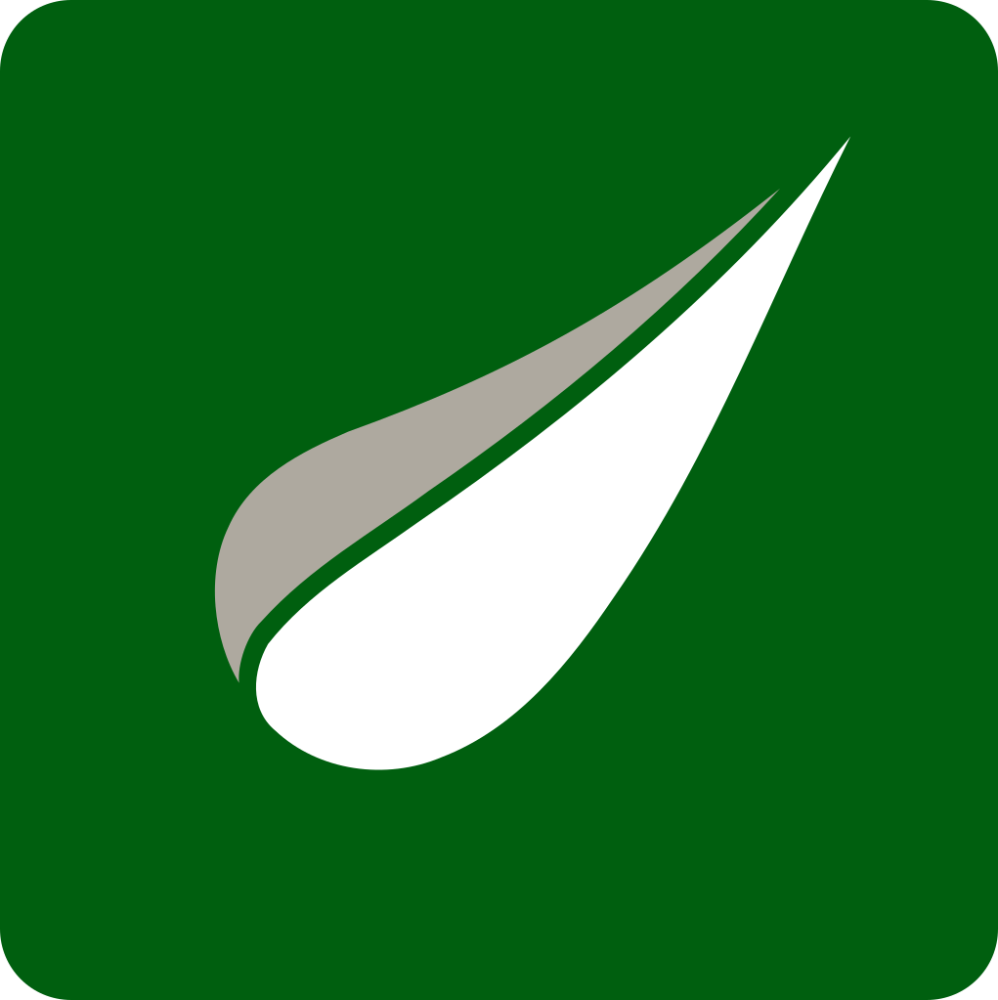

↑
↑
Léo Dessertenne
Développeur fullstack
Actuellement en dernière année (E5) à l'ESIEE Paris filière informatique, et en alternance chez IDM Group, où je développe en Java, Spring Boot et React les plateformes des dictionnaires en ligne d'Oxford, Cambridge et autres.


Présentation
Je m'appelle Léo Dessertenne. Passionné d'informatique, j'ai rejoint le BUT Informatique de l'Université
Gustave Eiffel en 2022, avant de poursuivre en codiplomation au sein du cycle ingénieur de l'ESIEE
Paris,
où je suis aujourd'hui en dernière année (E5).
En parallèle, je suis en alternance chez IDM Group, une entreprise spécialisée dans la création de sites
web, depuis 2023. Membre de l'équipe de développement, j'y contribue au développement fullstack des
plateformes des dictionnaires en ligne d'Oxford, Cambridge et Collins, avec des missions de plus en plus
techniques au fil du temps.
Mon portfolio illustre mon parcours, mes réalisations et mon enthousiasme pour
le domaine de l'informatique.
Mon Parcours
-
2023 - Aujourd'hui
Alternance IDM Group
En tant qu'apprenti au sein de l'entreprise IDM Group, mon contrat d'apprentissage m'a permis d'acquérir de l'expérience dans le domaine du développement logiciel. Intégré à l'équipe de développement des sites web, je mets en pratique les connaissances acquises lors de mes études tout en contribuant à des projets concrets, avec des missions de plus en plus techniques au fil des années.
-
2024 - 2027
ESIEE Paris — Cycle Ingénieur
En codiplomation avec le BUT Informatique, je poursuis mon cursus au sein du cycle ingénieur de l'ESIEE Paris. Actuellement en dernière année (E5), je consolide mes compétences en développement fullstack tout en préparant mon entrée dans le monde professionnel en tant qu'ingénieur.
-
2022 - 2024
BUT Informatique
Dans le cadre de mon parcours en BUT Informatique à l'Université Gustave Eiffel, j'ai développé des compétences solides en programmation, avec un fort accent mis sur les projets. J'ai obtenu mon BUT en codiplomation avec l'ESIEE Paris. Je vous invite d'ailleurs à découvrir quelques-uns de ces projets ici.
-
2020 - 2022
BAC Technologique STI2D
Titulaire d'un baccalauréat en Sciences et Technologies de l'Industrie et du Développement Durable (STI2D), avec une spécialisation en Innovation Technologique et Écoconception (ITEC). Bien que ma spécialité ait été orientée vers la mécanique, j'ai également consacré une part importante de mon temps libre à approfondir mes connaissances en informatique, notamment en apprenant divers langages de programmation tels que Python, CSS et HTML.
Projets
Voici les principaux projets et TP/TD de programmation que j'ai réalisés au
cours
de mes
études.
Cliquez sur un projet pour obtenir plus d'informations
Missions en entreprise
Deuxième année de BUT Informatique
Première année de BUT Informatique:
Compétences
Qualités Professionnelles
Savoir-être
Savoir-faire
Outils
Editeur de code
-

Visual Studio Code
IDE
-

Spring Tool Suite
-

Eclipse
-

IntelliJ
Système de gestion de base de données
-

PostgreSQL
-

Solr
Outil de gestion de base de données
-

PHPMyAdmin
-

MongoDB
Système de contrôle de version
-

Git
Outil de suivi des problèmes et de gestion de projet
-

Jira Software
Système d'exploitation
-

Linux
-

Windows
Frameworks et Technologies Web
-

Thymeleaf
-

SpringBoot
Langages de programmation
Quotidien
Utilisé en projet
Notions
Mes objectifs
Je termine actuellement mon cursus ingénieur à l'ESIEE Paris (dernière année, E5), en parallèle de mon alternance chez IDM Group où mes missions gagnent en responsabilité. Un stage à l'international est prévu dans le cadre de ma formation. Une fois diplômé, je vise un poste de développeur fullstack sur des projets à plus grande échelle, en France ou à l'international.
Contact
En dernière année d'école d'ingénieur, je suis à l'écoute d'opportunités de stage ou de premier poste en développement fullstack. N'hésitez pas à me contacter.